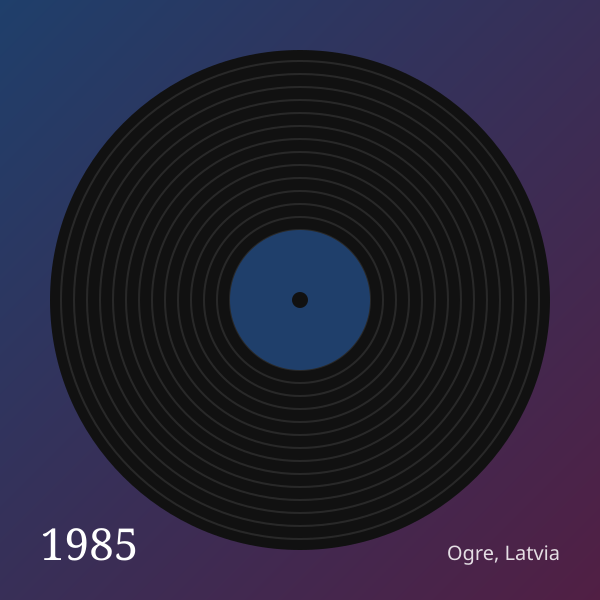

Banned twice, once for a train
A banned Latvian rock band, a concert in Ogre, and a smashed train on the way home.

- who
- Pērkons
- what
- Home-studio and live recordings, 1981–85
- when
- 1985
- where
- Ogre, Latvia
Pērkons ("Thunder") were banned by the Soviet authorities in 1983. They carried on under an absurd cover name, the Ensemble of the Soviet Latvia Collective Farm.
On 6 July 1985 they played the open-air stage at Ogre. On the train home some teenage fans wrecked two carriages. The band wasn't on the train, but they were banned again anyway, and the fans got show trials, which Juris Podnieks filmed for Is It Easy to Be Young?. Their early home-studio recordings had already gone hand to hand on tape.